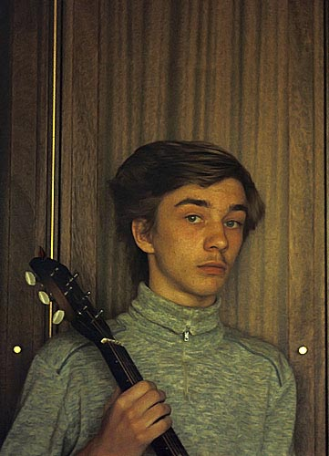
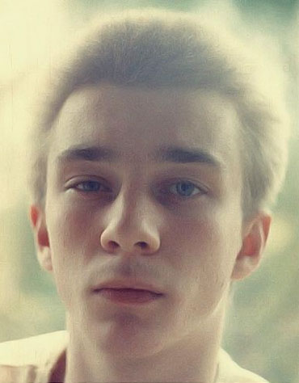
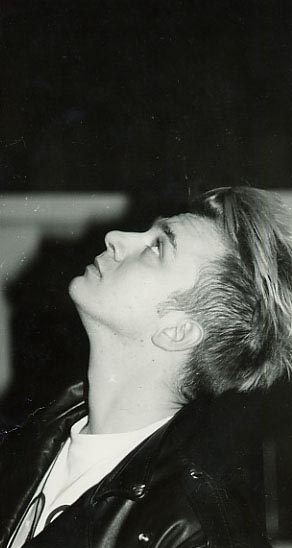

1982 m
Andrius Mamontovas
neoficiali autobiografija (arba bandymas ja parashyti:)
as gimiau 1967 metu rugpjucio 23 diena
turejau gimti savaite anksciau, bet mama pasakojo, kad labai nenorejau, todel mane i si pasauli prisikviete skatinamaisiais vaistais......
gimiau ryte....todel dar pataikiau i liuto zenkla pagal horoskopus (kuriais nevisada esu linkes tiketi). Is Vilniaus Antakalnio kliniku mane atveze ant Tauro kalno, kur mano tevai gyveno didziuliame mano senelio bute. Atveze valstybiniu automobiliu "Pobieda", nes mano senelis dirbo ministru taryboje tada...
pirma karta save atsimenu nuo akimirkos, kai budamas dvieju metu iskritau is lovos ir pamaciau mano galva nuriedancia per grindis ir tuo pat metu verkiancia...... taip iseina, kad mano atsiminimai prasidejo nuo haliucinacijos.... bet siaip, mano vaikyste buvo labai sviesi ir be jokiu rupesciu
visada norejau buti arba kosmonautu arba bremeno muzikantu, grojanciu elektrine gitara, nes labai megau ta animacini filmuka "Bremeno Muzikantai". Llabiausiai patikdavo ta vieta, kur jie vaziuoja ant karietos stogo ir groja elektrinemis gitaromis. visada laukdavau tos filmo vietos. Net vaikams po to kieme pasakodavau, kuo pranasesnes elektrines gitaros uz akustines, neturedamas apie tai zalio supratimo.
mokykloje buvau is tu, kurie gabus, bet pritingi
kai man suejo 10 metu, as istojau i B.Dvariono muzikos mokyklos, klasikines gitaros klase
mokinausi ten lygiai vienus metus
vienas keistas dalykas atsitiko man laikant pirmos muzikos mokyklos klases baigimo egzamina...
pamenu, isikalbejau su kazkokiu mano bendraamziumi, kuris irgi lauke savo eiles laikyti egzamina pas ta pati gitaros mokytoja,
kuris mokino ir mane net neatsimenu to vaikino vardo, tik gerai pamenu kad abu is karto radome bendra kalba apie gitaras ir muzika
(mums buvo po 11 metu)
veliau.....gal 10-je klaseje, pas mus atejo naujas mokinys Darius Tarasevicius
jis tapo grupes Foje pirmasis bosistas, nes mokejo groti gitara
po kazkurio laiko mes isiaiskinome, kad kalbejomes pries egzamina, susede ant palanges, kazkada, kai dar buvome vaikai...
turbut kai kurie susitikimai jau buna "suplanuoti" is auksciau, dar mums nezinant ju galutinio tikslo ir prasmes
taigi, muzikos mokslus teko palikti, nes "normalioje" mokykloje pradejau gauti nekokius pazymius is "rimtu" mokslu...
tada buvau palikes gitara stoveti kampe kelis metus, nes ruosdavau pamokas, isdykavau, dauziau langus ir lankiau irklavimo,
saudymo, autoralio bei visu kitu imanomu sportu treniruotes

1984 m
bet nuo 14-os metu beveik kiekviena vakara brazdinau gitara uzsidares kambaryje
veliau gavau skunda is kaimynu apacioje, kad musu bute kazkas kazka ritmingai kala kiekviena vakara po kelias valandas
teko mokytis groti, nemushant koja takto i grindis.su klases draugais muzikavome jau nuo ketvirtos klases.
tada surengeme pirmuosius pasirodymus, kukliai pabrazdindami kelias dainas gitaromis klases vakarelyje.
kartais kasetiniu magnetofonu irasinedavoma savo "muzika", grojama viskuo, kas papuola po ranka namuose, iskaitant stalines lempas ir tuscias kartonines dezutes nuo batu.
budami 12-os metu su klases draugu jau rimtai pradejome svajoti apie grupe
pirmas FOJE kuri tada dar vadinosi SUNKI MUZIKA, sastatas buvo:
Arnoldas Lukosius: klavisiniai
Darius Tarasevicius: boso gitara
Andrius Mamontovas: vokalas, musamieji
po kurio laiko as parodziau kaip laikyti bugnu lazdeles musu klasiokui Algiui Krisciunui ir tada paemiau i rankas gitara.
surepetavome pirmasias dainas ir pradejome nuo keliu koncertu musu mokyklos vakareliuosepirmas pasirodymas ivyko 1983-iais metais Spalio menesi (nepamenu dienos)
nuo tada oficialiai ir prasidejo musu grupes istorija. praejus metams po musu pirmo pasirodymo mokykloje, mes jau koncertavome kitose Vilniaus mokyklose, o veliau ir studentu sventese Vilniaus Universitete bei kitose aukstosiose mokymosi istaigose.
pirmas pasirodymas didelei auditorijai ivyko berods 1985-ais, pavasari per tuo metu labai populiarias Fiziku Dienas. mes grojome mazdaug 3000 zmoniu auditorijai ir nuo tada tapome pastebeti
deja neuzilgo grupe beveik isiro, nes ta pati pavasari mes baigeme mokykla ir Algis Krisciunas isvaziavo mokytis i Kauna, o Darius Tarasevicius tu paciu 1985-uju rudeni buvo pasauktas i kariuomene
taciau mes dar spejome irasyti pirmasias savo dainas "Liudesys", "Krantas", "Kitoks Pasaulis", "Vaikystes Stogas" ir dar kelias...
tais laikais interneto nebuvo, todel musu irasai pasklido po Lietuva perrasinejami is vieno juostinio magnetofono i kita.
(kaip zinote buvo tarybiniai laikai ir kulturos ministerijos nepatvirtintai grupei tiesiog imti ir isleisti savo albuma, buvo neimanoma)
as istojau i Vilniaus Inzinierini Statybos Instituta (VISI arba kaip tada buvo vadinama - "visiukai"). susiradau ten gyvavusia tuo metu grupe. jie kazka repetavo ir turejo puikias patalpas bei aparatura, apie kokia mums su FOJE galima buvo tik pasvajoti. taciau repertuaras pas juos buvo blankus (tiksliau, pas juos to repertuaro kaip ir nebuvo).
pasiuliau tiems vaikinams groti mano dainas ir mes radome bendra kalba. tada FOJE nariais tapo Romas Rainys ir Eugenijus Pugaciukas "Genys". po kaliu savaiciu prisijunge Arnoldas, Darius Burokas ir saksofonistas Saulius Valikonis. mes pradejome repetuoti ir koncertuoti studentu sventese.
1986-uju pavasari, Vilniaus ploksteliu irasu studijoje, mes iraseme tris dainas: "Saugok Vaikyste", "Distancija" ir "Lauzo Sviesa".
mums pavyko sugroti festivalyje Lituanica-86, po kurio mus pakviete nusifilmuoti Lietuvos Televizijos muzikine laida "Metronomas" ir tai buvo pirmas kartas, kada mus pamate ir isgirdo gerokai platesne auditorija. bet kaip tik ta akimirka mane ir Arnolda paeme i kariuomene.
as atsiduriau Kaliningrado srityje, Gusevo mieste. Ten tarnavau kariniame orkestre, taciau pries tai beveik puse metu praleidau artilerijos dalinyje, kur gavau pashtininko pareigas. Kadangi kiekviena diena netrukdomas galejau iseiti i miesta ir skambinti i Vilniu (tais laikais mobiliakai ar internetas buvo kazkas is mokslines fantastikos srities:))
mano draugai man praneshe, kad rezisierius Arturas Pozniakovas ruosiasi filmuoti pirma lietuviska muzikini filma "Kazkas Atsitiko", kur ruosiasi kviesti Vytauta Kernagi ir grupe Antis. Dar jie pasake, kad buvo planuojama kviesti ir Foje, taciau, kai filmo kurejai suzinojo, jog mes kariuomeneje, tai atsisake tos minties. Todel kiekviena diena eidamas is savo dalinio i pashto skyriu nuneshti ir pasiimti laishku, as skambinau i Vilniu draugams ir ju padedamas susiradau visus reikiamus zmones Lietuvos Kinostudijoje ir pasakiau, kad esu gyvas ir kad pakalbejus su tam tikrais aukstais karininkais mane galetu isleisti filmuotis. Taip ir atsitiko. po keliu savaiciu Lietuvos Kinostudijos zmones atveze vienam generolui buteli viskio ir as buvau desimciai dienu isleistas i Vilniu. Staiga atsiduriau priesais 20 tukstanciu zmoniu auditorija Vilniaus Kalnu Parko scenoje, kartu su visais FOJE nariais isskyrus Arnolda, kurio deja i filmavimus armija nepaleido...
po to, kai buvo nufilmuotas filmas "Kazkas Atsitiko", FOJE tapo labai zinoma ir populiari grupe.
Lauzo Sviesa man ir mano draugams atidare visas duris i pasauli. kartais net keista pagalvoti, jog visa tai vis dar tesiasi ir siandien.
budamas kariuomeneje as dar karta buvau istrauktas is jos porai savaiciu, kai Lietuvos Kinostudija mane vel nusprende pakviesti filmuotis kinofilme "Parodu Rumai".
kai paskutine 1988-uju Geguzes diena is tarnybos grizau i Vilniu, pasaulis, kuri pazinojau anksciau jau buvo pasikeites. as pirma karta susiduriau su tuo, kad mane atpazista gatveje. tai buvo shokas, nes kai taip atsitinka ir tau yra tik 20 metu, tai, tiesa pasakius, nelabai net isivaizduoji ka turi daryti su ta nauja "nashta".
is pradziu tai truputi nervina, veliau pradeda patikti ir netgi pradedi tuo megautis. veliau, kai "pasveiksti", tai tiesiog suvoki, jog tau taip yra duota ir kad tai yra neisvengiama tavo veiklos sudetine dalis, ir kad kiekviena akimirka turi tiesiog buti savimi.
bet tada as dar nebuvau tiek subrendes, kad visa tai suprasciau blaiviu protu. as tiesiog pasineriau i FOJE atkurima. tuo pat metu istojau i Vilniaus Universiteta studijuoti zurnalistikos. prasidejo naujos studijos ir naujos repeticijos su atnaujinta grupe. gitaristas Romas Rainys nebegrojo su mumis, nes jis jau buvo tapes neatskiriamas tuo metu labai populiarios grupes KATEDRA narys. saksofonistas Saulius Valikonis repetavo su grupe AD LIBITUM. todel mes su Arnoldu ir bugnininku Geniu pasibeldeme i repeticiju studija pas du Vilniaus muzikantus Gedimina Simniski (bosas) ir Jauniu Beinorta (ATA) (gitara). musu tikslas buvo pasirodymas festivalyje Lituanica-88 ir FOJE sugrizimas.
atnaujintu sastatu sudalyvavome festivalyje ir tai buvo pirmas kartas, kai zmones kalbejo, kad "foje mire". nuo tada kiekvienais metais su kiekvienu nauju albumu visi kalbedavo, kad "foje jau nebe ta" ir kad "jie visiskai nusivaziavo" dar tada kai albumai "Gali Skambeti Keistai" ir "Kai Perplauksi Upe" nebuvo net pradeti kurti...
keistas fenomenas. kai mes isleisdavome nauja albuma, tai visi pripazindavo pries tai buvusi, o nauja kritikuodavo :)
tas pats su mano soline kuryba tesiasi. galbut tai geras zenklas? :)
bet ne apie didvyrius kalba, kaip sakoma :)
mes pradejome koncertuoti. 1989-ais ivyko pirmasis didelis FOJE turas per Lietuva. tada zmones dar galedavo leisti sau eiti i koncertus ir grupes galedavo koncertuoti be jokiu remeju net ir maziausiuose Lietuvos miesteliuose, nes beveik visur budavo po du o kartais net ir po tris koncertus i vakara, sausakimshose salese. tai buvo paskutiniai lietuviskos muzikos aukso amziaus metai......ko gero. Tu paciu metu pavasari grupe paliko Arnoldas Lukosius, kuri pakeite klavisininkas Robertas Griskevicius (ATA). Arnoldas sunkiai sutare su kai kuriais grupes nariais ir vardan to, kad show testusi as ji "paleidau atostogu". Nors veliau gailejausi, kad nepaleidau visu kitu, nes FOJE visada buvo yra ir bus mano ir Arnoldo svajone. Musu gyvenimuose tai ko gero pats svarbiausias dalykas, kurio dalimi buvome ir visada busime, net jei grupes ir nebera.1990-ais is kariuomenes sugrizo FOJE bosistas Darius Burokas, grupe paliko Gediminas Simniskis ir Jaunius Beinortas(ATA). Robertas Griskevicius (ATA) isvyko i JAV organizuoti musu koncertu, o likusi FOJE dalis isvyko i Prancuzijoje vykusi festivali "Festival Interceltique'90". Tai buvo pirmas ishstojimas pries mazdaug 3000 zmoniu auditorija uz Lietuvos ribu.

1990 m
Veliau tu paciu metu rudeni ivyko pirmasis FOJE turas Jungtinese Amerikos Valstijose. Mes atvaziavome pagroti suplanuotu 5-iu koncertu o isvykome pagroje 14 ir gerokai pasibaste tarp Chicagos ir New York'o.
1991-ais as nusprendziau performuoti FOJE, nes mes pradejome stoveti vietoje, todel kad grupes nariu interesai nebuvo vienodi. Likome dviese su Darium Buroku ir Varsuvoje (Lenkija) irase albuma "Gali Skambeti
Keistai" isvykome pusei metu i JAV, kur mus pakviete lietuviu kilmes prodiuseris Jonas-Dainius Berzanskis, prodiusaves mano ka tik minetaji albuma. Beje, "Gali Skambeti Keistai" buvo pirmasis lietuviskos grupes albumas, isleistas CD pavidalu. Prie viso to, jis buvo isleistas Detroite...
Pamenu, kaip irasinejau daina "Amzinas Judesys". Iraso metu grojant solo gitaros partija, nutruko styga. Tada pasiemiau kita gitara ir vel toje pacioje dainos vietoje nurtuko ta pati styga....taip atsitiko ir su trecia gitara....daugiau gitaru nebuvo, todel teko keisti styga ir tik tada pabaigti dainos irasa.
Per puse metu, praleistu Amerikoj, mes sugrojome puse simto koncertu ivairiu miestu klubuose. As pirma karta supratau, kodel as lipu i scena ir kad muzika yra vienintelis dalykas, kuri noriu tureti salia saves visa savo gyvenima. Todel grizes i Vilniu, neuzilgo palikau studijas VU zurnalistikos fakultete. Prasidejo FOJE atgimimas. I grupe grizo mano klasiokai Algis Krisciunas ir Arnoldas Lukosius (Darius Tarasevicius i grupe buvo grizes tik dviems dainoms, paskutinio FOJE koncerto metu).
1992, buvo koncertu Lietuvoje metai. Mes buvome pasiilge savo gerbeju visuose miestuose, kaip ir jie musu. Isleidome senu geru dainu albuma "Kitoks Pasaulis". Pamenu perraseme "Lauzo Sviesa" taip, kaip kazkada ja buvome groje, dar iki to iraso, kuris ispopuliarejo 1986-ais, bet versija gavosi skystoka. Todel, kai klausysite "Kitoki Pasauli" tai ta daina praleiskite, nes tikroji jos versija yra albume "Paveikslas" :)
FOJE vel pradejo koncertuoti.
1993-uju Sausyje FOJE isvaziavo i tura po Cekijos respublika. Buvo shalta, dregna ziema. Tris savaites mes koncertavome ivairiuose tos salies klubuose. Grojimas uzsienyje yra pati vertingiausia patirtis, nes kai groji ten, kur taves niekas nepazista, tai gali is tikruju pamatyti ko esi vertas ir kur tavo silpnosios ar stipriosios vietos. Manu, kad vienas is veiksniu, kuris nuleme FOJE sekminga ir ilga gyvavima buvo gastroles uz
Lietuvos ribu. Mes grizdavoma pilni nauju patyrimu ir sumanymu. Nes kai visa laika groji tokioje nedideleje salyje kaip musu, tai viena diena neisvengiamai pradedi virti savose sultyse. Keliones ir koncertai uzsienyje visada buvo ir yra tas naujas kraujas, kurio kartais taip reikia, kad judetum pirmyn.
Tu paciu 1993-iuju vasara mes pradejome irashineti albuma "Vandenyje". To paties pavadinimo daina buvo sukurta 1991-ais, kai as gyvenau Amerikoje, o visiems zinoma, ir veliau su Skamp irasyta "Nieko Panasaus", buvo sukurta Varshuvoje, irasinejant albuma "Gali Skambeti Keistai", bet i ji nepakliuvo. Taigi, surinke per kelis metus mano parashytas dainas ir prideje kelias naujas, mes turejome nauja albuma, kuri pristateme FOJE 10-ies metu jubiliejaus proga skirtame koncerte. Tai buvo Spalio menuo. Vilniaus Sporto Rumai. Grojome triju daliu koncerta. Pirma buvo balta, antra juoda, trecia spalvota. Tiek dainos, tiek scenos apipavidalinimas buvo tokiu spalvu, nes tokiu budu norejosi apibudinti musu grupes raida......nuo baltu naiviu danu iki tamsiu, ir pagaliau iki tu, kuriose gyvena visos spalvos....
Koncertas buvo puikus. Tiesa, vienam vaikinukui saleje jis baigesi sunkia trauma, nes prie scenos buvo gana didele grustis ir apsauga tais laikais dar nebuvo tinkamai treniruota, kad apsaugotu zmones tinkamai. Labai noretusi tiketi, kad to nukentejusio zmogaus gyvenimas susikloste gerai ir jis nemini musu blogu vardu....
Veliau, kitais metais buvo isleistas to koncerto irasas albumuose "As Cia Esu" ir "As Cia Esu 2". Pastarasis buvo atspaustas spalvotoje vinilineje plokshteleje, kuri ir tapo musu paskutinis albumas isleistas vinile. Visas pasaulis jau buvo pradejes klausytis kompaktiniu ploksteliu (CD), kurios atsirado ir Lietuvoje tuo metu.
Andrius.